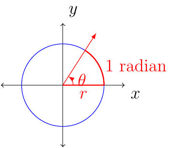
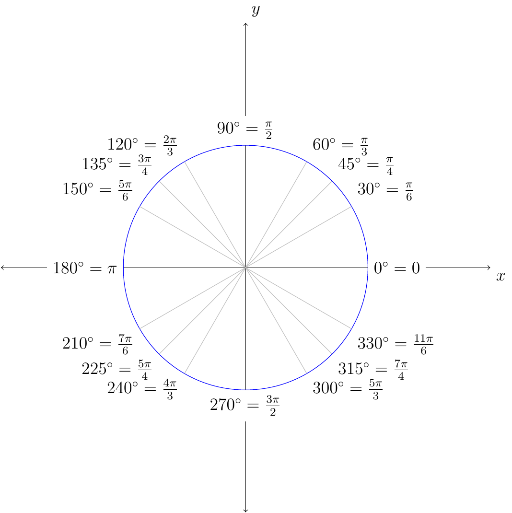

Section 3.1
Definition 7 (Radians)
An angle with its vertex at the center of a circle that intercepts an arc on the circle equal in length to the radius of the circle has a measure of 1 radian.

Given that \(360^{\circ}=2\pi\text{ radians}\) for simplicity we notice that \(180^{\circ}=\pi\text{ radians}\). This means that
and
Example 17
Convert from one unit to another.
\(30^{\circ}\)
Solution:
\(\frac{2\pi}{3}\) radians
Solution:

Example 18
Evaluate the following:
\(\cos(\frac{\pi}{6})\)
Solution:
\(\sin(\frac{\pi}{4})\)
Solution:
\(\cos(\frac{7\pi}{6})\)
Solution:
Notice that \(\frac{7\pi}{6}\) is in quadrant III, the reference angle is \(\frac{\pi}{6}\), and \(\cos(\theta)<0\) when \(\theta\) is in quadrant III:
\(\tan(\frac{5\pi}{3})\)
Solution:
Notice that \(\frac{5\pi}{3}\) is in quadrant IV, the reference angle is \(\frac{\pi}{3}\), and \(\tan(\theta)<0\) when \(\theta\) is in quadrant IV: